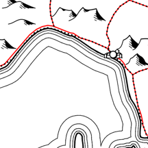

Dieses Plugin ermöglicht kartografische Linienverdrängung (z. B. dort, wo in kleinen Maßstäben eine Straße zu nahe an eine Autobahn, eine Küste etc. gerät). Es bewirkt, dass die zu verdrängende Linie der bleibenden Linie nicht näher kommen kann als bis zum Rand eines Puffers um die bleibende Linie. Wo sie ihr eigentlich näher käme, verläuft sie stattdessen am Pufferrand.
Die verdrängte Geometrie wird grundsätzlich geschrieben. Dynamische Linienverdrängung ist begrenzt möglich.
Die Ebenenauswahl ist selbsterklärend.
Wenn Ihre Ausgangsgeometrie per Geometriegenerator dynamisch vereinfacht oder geglättet wird, können Sie versuchen, dies hier nachzubilden, damit die neu generierte, verdrängte Geometrie dazu passt. Genauer gelingt dies ggf. später im Geometriegenerator der verdrängten Geometrie (zu dieser Möglichkeit s. unten bei Symbolebene hinterlassen …).
Belässt man die Werte fürs Glätten auf null, verwendet QGIS Standardwerte.
Verdrängungs-Abstand ist der Radius des Puffers, der um die bleibende Geometrie gezogen wird.
Mindestlänge verdrängter Strecken erlaubt es der verdrängten Geometrie, mit ganz kurzen Strecken doch in den Puffer einzudringen, was manchmal zu besseren Ergebnissen führt.
Standardmäßig wird die verdrängte Geometrie in eine temporäre Ebene geschrieben, deren KBS Sie hier bestimmen können.
Lassen Sie stattdessen in eine vorhandene Ebene schreiben, wird deren bisherige Geometrie überschrieben, wenn Sie nicht neue Geometrie anhängen wählen.
Ist das Liniennetz der zu verdrängenden Geometrie stark fragmentiert, sollte es vorher zu durchgängigen Linien verknüpft werden, weil sonst Lücken entstehen, wo kleine Fragmente gänzlich im Puffer liegen.
Eine Neuverknüpfung nach der Verdrängung kann das Ergebnis verbessern.
Insgesamt bedienen Sie mit diesen Einstellungen das Skript Netzfragmente geradeaus verknüpfen (iterativ), welches Sie auch separat in den Verarbeitungswerkzeugen finden, falls Sie unten Symbolebene hinterlassen … gewählt haben.
Die Debug-Stufen stammen aus der Entwicklung des Plugins und können bei der Fehlersuche helfen.
Symbolebene hinterlassen … könnte eine der wichtigsten Optionen dieses Plugins sein. Denn das Plugin ist lediglich eine grafische Benutzeroberfläche für die Funktion line_displacement, die über einen Ausdruck im Geometriegenerator aufgerufen wird. Das Plugin baut diesen Ausdruck und startet den Geometriegenerator. Die hierfür angelegte Symbolebene beizubehalten, hat mehrere Vorteile:
Die Funktion line_displacement wird nur aktiv, wenn die Symbolebene sichtbar und die ganze Ebene sicht- und bearbeitbar ist (Ausnahme: pre_final erfordert nur Sichtbarkeit, um dynamische Linienverdrängung zu ermögilchen). Zur manuellen Ausführung empfiehlt sich folgende Reihenfolge:
Wählen Sie Symbolebene hinterlassen …, so bleibt die Funktion line_displacement (Linienverdraengung.py) im Funktionseditor des Geometriegenerators verfügbar, und das Skript Netzfragmente geradeaus verknüpfen (iterativ) (Netzfragmente_verknuepfen.py) verbleibt in der Rubrik Netzbereinigung bei den Verarbeitungswerkzeugen.
Schlussendlich können Sie eine Logdatei auf dem Desktop ablegen, z. B. zur Fehlersuche.
Entwickelt von Robert Pfeffer, Hessen
(mit freundlicher Unterstützung von ChatGPT)
Lizenz: GPL 3.0